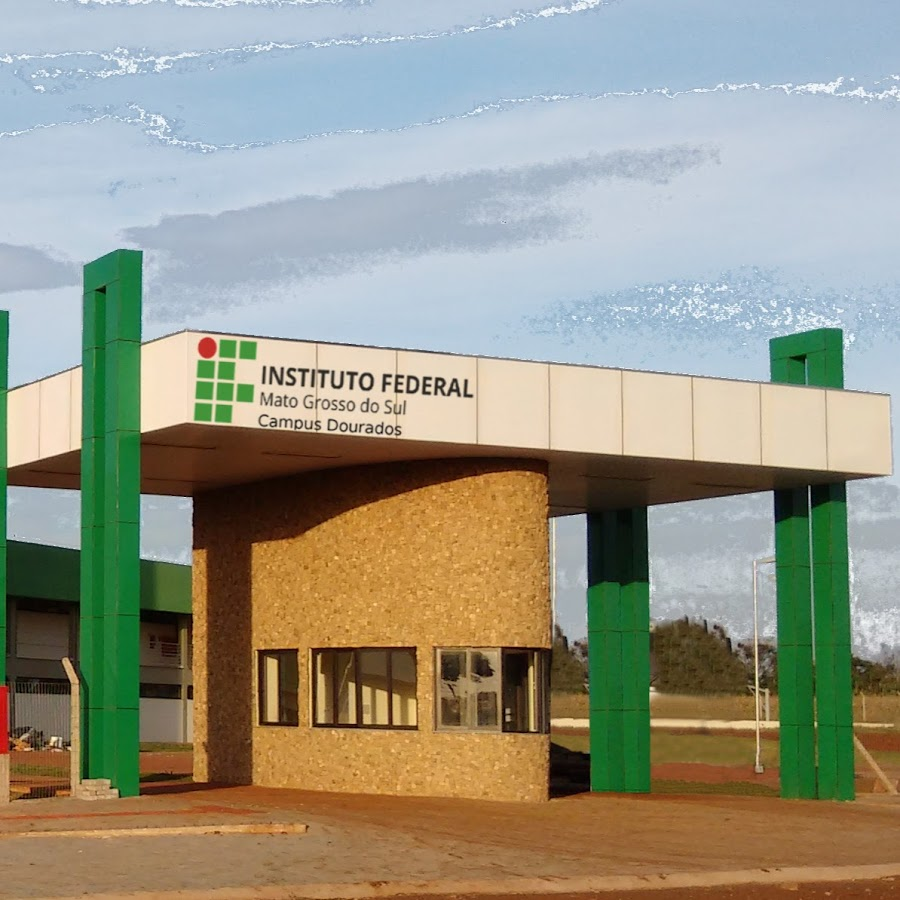

No IFMS há dois cursos integrado, além do ensino médio básico, o de Técnico par a Informática e o Curso de Adiministração, que ao fazer a inscrição já vem junto, e ao completar os cursos, você já sai formado no curso matriculado, já sai como um profissional da Areá.
Veja o que cada curso trabalha:
TI(Técnico para Informática): Trabalha na parte de criação de sites exclusivamente para a internet, Frond-end 1,2,3, Fremeworks,Banco de Dados
Interface Gráfica: Trabalha com criação do estilo do seu site, usando design básico
Administração(A.D.M):O técnico em Administração está habilitado a executar operações administrativas relativas a protocolos e arquivos, confeccionar e expedir documentos e controlar estoques. O profissional também aplica conceitos e modelos de gestão em funções administrativas e opera sistemas de informações gerenciais de pessoal e de materiais.
O campo de atuação inclui empresas e organizações públicas e privadas, sendo que o técnico pode trabalhar nos setores de marketing, recursos humanos, logística, finanças e produção.

Além de ter ótima metodologia o Campus Dourados contêm psicóloga, para que os alunos possam se organizar na hora de estudar
Além de ter um projeto para os alunos que ficam de DP (Depência Estudantil) que ajuda a se organizar, para diminuir o máximo de Dps possivel.